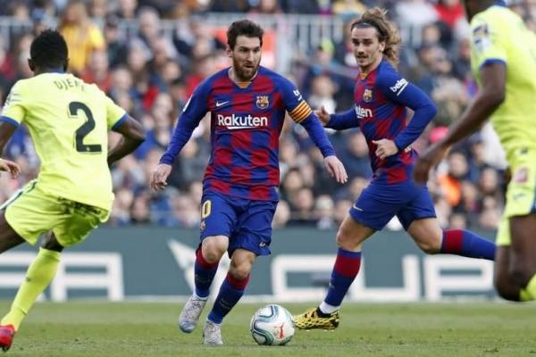
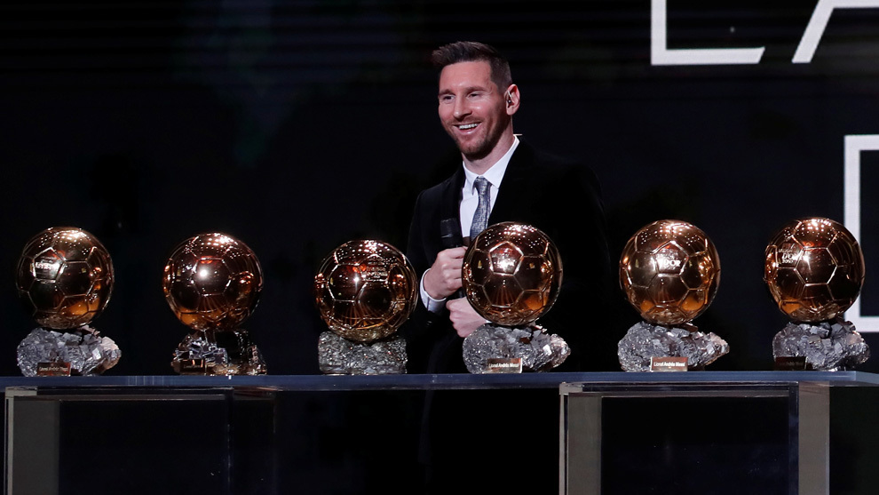
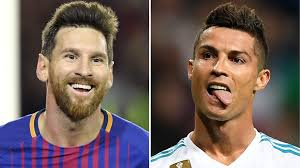

Últ. actualización: 08 de octubre de 2020
Mejores estadísticas del fútbol
Goleador de la historia del fútbol: Josef Bican
Según el registro histórico, Josef Bican es el jugador con más goles en la historia, convirtiendo 805 goles en 530 partidos, esa cifra fue convertida entre los años 1928-1956
En el top 10 de goleadores, 8 se retiraron, dejando solo a 2 vigentes goleadores, Cristiano Ronaldo con 742 goles y Lionel Messi con 706, ambos jugadores repletos de récords, no hay duda que habrá un muy buen registro en su cuota goleadora en el fin de sus carreras, éstos ocupan las posiciones 5 y 7 respectivamente.

Máximo asistente: Lionel Messi
Lionel Messi, el jugador Argentino y del Fc Barcelona ocupa el primer lugar en asistencias en la historia del fútbol con 282 tantos, el que lo sigue es su amigo y ex compañero en Barcelona: Luis Suárez con 211 asistencias.

El jugador con más balones de oro: Lionel Messi
Como ya se sabe el balón de oro es el premio al mejor jugador mundial del año, por lo que es el premio más importante a nivel individual, Lionel Messi jugador aún vigente es el máximo ganador con 6 tantos, el que lo sigue es ya su habitual rival en las últimas dos décadas, Cristiano Ronaldo con 5 de estas ediciones.

Jugador con más premios individales: Lionel Messi
El jugador con más premios individuales es Lionel Messi, con 14 premios, nuevamente lo sigue Cristiano Ronaldo con 13 premios, uno menos que el Argentino, lamentablemente ninguno de estos jugadores ganó un premio individual en este año 2020.
Trotamundo: Sebastián Abreu
Sebastián Abreu eñ jugador Uruguayo de 43 años es el jugador que ha vestido más camisetas en el mundo del fútbol, 29 para ser específicos, un verdadero trotamundo.